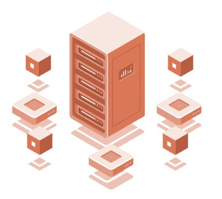

<section id="l8-04" style="background:#F4F5F7;color:#25282D;font-family:'Noto Sans KR', Arial, sans-serif;padding:88px 106px 106px;display:flex;flex-direction:column;gap:20px">
<p style="font-size:26px;font-weight:700;letter-spacing:6px;color:#C4613F">구성 방식</p>
<h2 style="font-family:'Noto Serif KR', Georgia, serif;font-size:68px;font-weight:700;line-height:1.2;color:#25282D">도구는 MCP 서버를 통해 들어온다</h2>
<x-connector x1="704" y1="618" x2="1212" y2="618" head="end" style="color:#6B7280;border-width:2px"></x-connector>
<p style="position:absolute;left:858px;top:598px;width:200px;font-family:'JetBrains Mono', 'Courier New', monospace;font-size:24px;font-weight:700;line-height:40px;text-align:center;color:#C4613F;background:#F4F5F7">four tools</p>
<div style="position:absolute;left:188px;top:444px;width:516px;height:332px;display:flex;align-items:center;gap:22px;background:#FFFFFF;border:1px solid #E4E6EA;border-radius:12px;box-shadow:0 4px 16px rgba(30,35,45,0.07);padding:0 26px">
<div style="width:76px;height:76px;flex:none;display:flex;align-items:center;justify-content:center;border:2px solid #D97757;border-radius:50%;background:#FBF1EC"><x-icon name="Settings" style="color:#D97757;width:33px;height:33px"></x-icon></div>
<div style="display:flex;flex-direction:column;gap:6px"><h3 style="font-family:'Noto Serif KR', Georgia, serif;font-size:32px;font-weight:700;color:#25282D">ShopAssist</h3><p style="font-size:24px;line-height:1.4;color:#5F6670">Agent SDK가 루프를 실행</p></div>
</div>
<div style="position:absolute;left:1216px;top:354px;width:542px;height:534px;display:flex;flex-direction:column;align-items:center;justify-content:center;gap:10px;background:#FFFFFF;border:3px solid #D97757;border-radius:12px;box-shadow:0 4px 16px rgba(30,35,45,0.07);padding:18px">

<h3 style="font-family:'Noto Serif KR', Georgia, serif;font-size:32px;font-weight:700;color:#C4613F;text-align:center">MCP 서버</h3>
<p style="font-size:24px;line-height:1.4;color:#5F6670;text-align:center">스토어의 백엔드</p>
</div>
<aside>원문 제목: Tools come through an MCP server (HOW IT IS BUILT). ShopAssist (Agent SDK runs the loop) —four tools→ MCP server (The store's backend).</aside>
</section>
